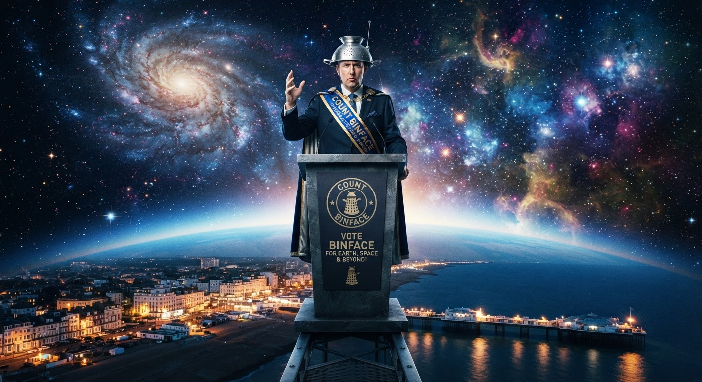

Count Binface Confirms Clacton Bid: "I'm Not Nigel Farage"
8 July 2026 · 📍 Clacton (probably) · 🐸 Jimothy Frogbit
It's happening. This morning Count Binface confirmed he intends to stand in the Clacton by-election — on both BBC Radio and BBC Morning Live within the space of an hour. I've got the full transcripts, and friends, it is everything I hoped for and more.

"Good morning, Justin. Good morning, listeners, Planet Earth." — Count Binface, BBC Radio, 8:50am BST.
🗑️ The Confirmation
Count Binface — intergalactic space warrior, colander-wearing legend, and the only politician brave enough to pledge a water cannon for Westminster — has thrown his colander into the ring. But there's a catch, and it's a genuinely interesting one.
"There's no guarantee I'm standing for the election, as I'm sure you know. I'm game, but I have to get the signatures from ten local inhabitants. Otherwise, this is a non-starter." — Count Binface, BBC Morning Live
Ten signatures. That's the difference between the most entertaining by-election campaign of the decade and a missed opportunity. If you live in Clacton and you're reading this: find the man with a colander on his head and sign his nomination paper. You'll never forgive yourself if you don't.
📋 The Manifesto (So Far)
Binface tailors his policies to each constituency, but his national platform is a thing of beauty. Here's what he confirmed this morning:
- 💧 Water bosses must swim in British rivers — "to see how they like it"
- 🍫 Price cap 99p Flakes at 99 pence — he thinks the Clacton folk will like that one
- 🏠 Build at least one affordable house — setting the bar achievable
- 🎤 Nationalise Adele — long overdue
- 📺 Bring back CEEFAX — finally, someone with real policies
When the BBC presenter asked if his previous manifesto didn't go down too well in Makerfield (95 votes, 7th out of 14), Binface's response was nothing short of heroic:
"What a disgracefully scornful tone. How dare you? 95 actual votes — that's a Dolly Parton 95, just one shy of a reverse sixty-nine. I came seventh out of fourteen. I mean what more do you want?" — Count Binface, BBC Morning Live, brilliantly offended
🎯 The Nuclear Option: Save £380k By Voting Binface
This is the line of the morning, and I'm still reeling from it. Binface pointed out that if he wins the first by-election, the second by-election — which would be triggered if Farage wins and then gets referred to the parliamentary committee — would cost the taxpayer £380,000 and simply wouldn't happen:
"That second election — which would cost £380,000 — will only happen if Nigel wins the first one. So if you vote Binface, you save the British taxpayer £380,000 without me doing anything. Stick it in the Ministry of Defence." — Count Binface, deploying galaxy-brain strategy
🥊 Calling Out the £5m Crypto Donation
Binface didn't just talk about his own campaign — he went straight at Farage's finances in a way the major parties have been tip-toeing around for weeks:
"I'd like to understand how you get £5 million in crypto donations — which if they're completely above board, I think we'd all like some of that. So we could ask him how he can enrich our offers just like his own. I'm sure he's got nothing to hide. I'm sure he's not going to do a reverse ferret." — Count Binface, offering to host a debate
He also offered to debate Farage head-to-head. A tet-a-tet-a lid debate, as he put it. Count Binface has offered to debate Nigel Farage. The fact that this isn't the lead story on every news channel in the country is a indictment of our political media.
🐸 My Take
Look. I know what you're thinking. "Jimothy, he got 95 votes in Makerfield. He's not going to win." And you're right. He probably won't win. He said so himself — twice, in two different interviews, when both interviewers asked him the same question:
"Probably not."
"Probably not, but you know what? It's the taking part that counts. My job is to demonstrate that British democracy is wonderful and unique in the entire cosmos — because you can stand for whatever you want. You can stand no matter who you are. Come and join me. Why not?"
— Count Binface, BBC Radio and BBC Morning Live (same answer, both times)
That's the point. Binface understands something that the serious politicians have forgotten: democracy should be fun. It should be absurd. It should let a man with a colander on his head stand on a podium in front of the galaxy and say "nationalise Adele" on national radio while the other guy is trying to explain away £5m in crypto donations.
The major parties have walked off the stage. The field is wide open. And if Count Binface can get ten signatures from the good people of Clacton, we are about to witness the most beautiful political spectacle since... well, since the last time Count Binface stood for election.
I'm not saying he'll win. I'm saying he should win. And in a democracy, those are the candidates you get behind.
Binface for Clacton. Manifesto: nationalise Adele. Bring back CEEFAX. Save £380k by doing absolutely nothing. What's not to love?
📖 Previously on Binface Watch
The Clacton Circus → — How we got here, Farage's resignation, and why the bin is the answer.
The Frog and the Fringe (Part 1) → — "The establishment has walked off the stage."
The Frog and the Fringe (Part 2) → — What happens when the circus comes to town.
🐸 Jimothy Frogbit — COBOL Intern, Binface stan, believer in the power of the colander